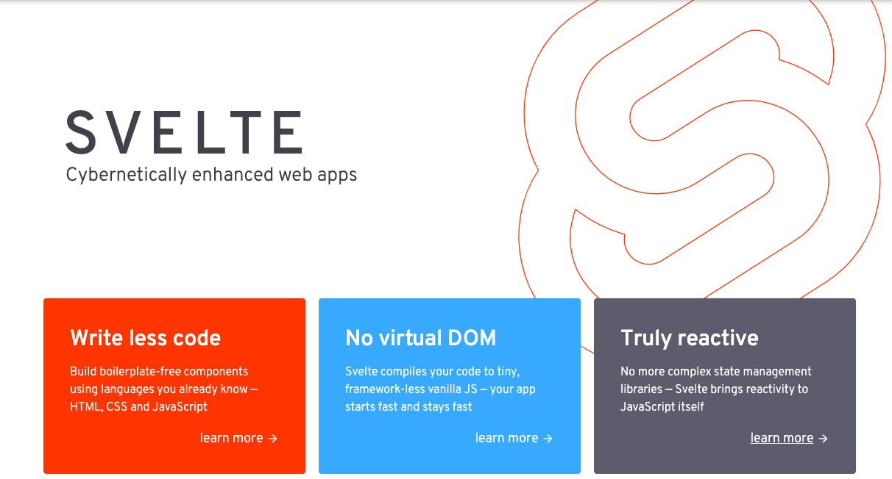

abstract
web前端轮子越来越多,最近发现一个好玩的,叫做svelte.本文主要介绍了svelte的特点,尝试解释其中的原理,与vue做了比较.

introduction
web前端的技术迭代很快,各种轮子层出不穷.目前的处于统治地位的var(vue,react,angular),主要有使用组件化、虚拟dom等技术,在生产环境中会加载框架的运行时代码.而且,前端技术的发展,各种各样的轮子层出不穷,甚至有一个vanilla.js的框架出现,专门嘲讽目前的这种风气.
svelte也是一个轮子,他最吸引我的地方在于将自己定位为一个编译器,在编译阶段将代码转换为原生的js, 而且放弃了虚拟dom.在响应式方面, 自己做了更多的工作,我的感受是默认的变量都是响应式的.
主要特点
本部分主要来自官方的tutorial的总结.花了一天时间跑了所有的例子,有些感想一起放在下面.
初感受
- {}绑定数据,包括html标签中的属性绑定
没有vue中引入的template和react的jsx的语法,一切与原生写法都很类似.数据默认就是响应式的,在html中直接使用{}就可以拿到js中定义的数据.当然数据的作用范围是在组件内.{}类似模版的语法,可以执行一些简单的js逻辑.这一部分还是比较符合现在的潮流.
1 | <script> |
响应式
- 默认响应式
默认的变量都是响应式的,通过{}获取的数值会自动更新 - 更简单的computed
使用$就可以1
2
3
4$: if (count >= 10) {
alert(`count is dangerously high!`);
count = 9;
}
比如将上面看作在一个函数中,和vue就几乎没什么区别.(笑哭)
- 只有赋值才会引起数据响应式
这是个比较蛋疼的地方.特别的对于数组或者对象,改变了其中一个元素或者属性,并不会引起数据的响应式变化.官方的例子中给出了numbers = [...numbers, numbers.length + 1];这样强行赋值的写法.但是不符合常理.搜索一圈git发现果然已经有人给出了方法的封装(https://github.com/dasmikko/svelte-array-helper).
应该是svelte处于性能的考虑, 只对对象的引用(指针)做了比较.
子组件传值
这里是第一个不太适应的地方,在子组件中,通过export自己的属性名字,在父组件中拿到这个名字,然后传值.这样是将子组件暴露给父组件,这样貌似没有props传值更加让人舒服.
数据流向也是top-down.父组件修改后会引起子组件的重新渲染,反之不会.
更加贴近模板的语法
如果使用过html模板,对这一部分应该挺熟悉.比如下面:1
2
3
4
5{#if user.loggedIn}
<button on:click={toggle}>
Log out
</button>
{/if}
简直就是v-if的翻版.只能说, 真香!
事件和vue更像
只能说这种语法和许多框架大同小异.1
2
3<button on:click|once={handleClick}>
Click me
</button>
通过on绑定事件,然后添加once的限制.和vue中添加“.”的语法简直一模一样嘛.
组件的生命周期
有四个钩子函数,分别对应创建,销毁,更新前,更新后
动画和样式
这个是svelte自己实现的一些语法糖.语法有点怪怪的.个人感觉还是原生的css写的更方便.
总结
本来想写一个详细入门攻略, 结果变成一个tutorial的个人记录.
之后
svelte确实是一个与var思路不同的轮子.
对于他的生态,官方给出了一个sapper的框架,集合了路由的功能.对国内使用,还需要一个通用的组件库,类似antd和element.
用的人比较少,踩的坑比较少.
另外, 希望能够支持typescript.官方说了会支持, 但是不知道什么时候.
对于vue的底层原理了解不透彻,所以也无法从更深层次比较两个轮子.之后还会继续关注这个(又挖了一个坑…)
另外,svelte默认用rollup打包,本着折腾的思路,用rollup打包了vue的项目,比较一下打包之后的文件.这个留在之后再说.